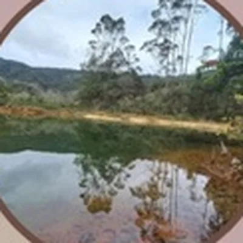
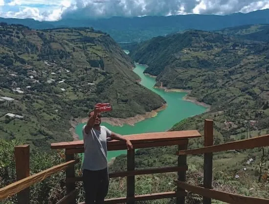
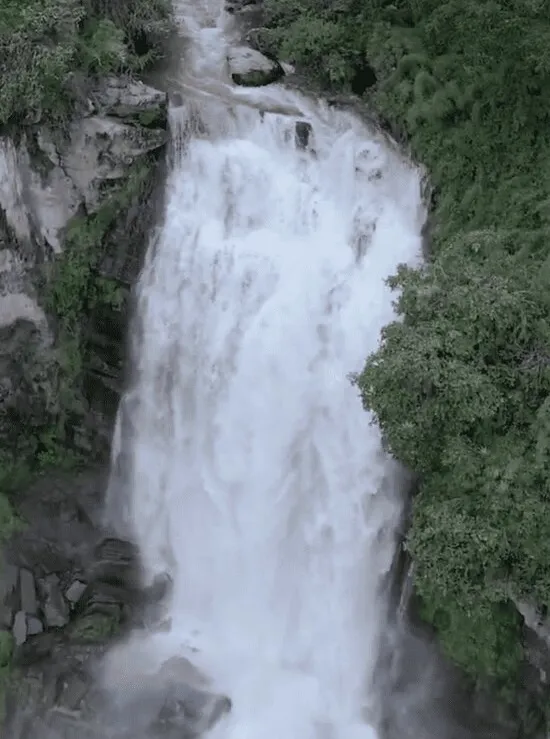
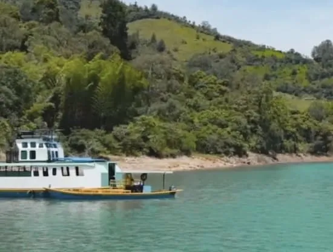
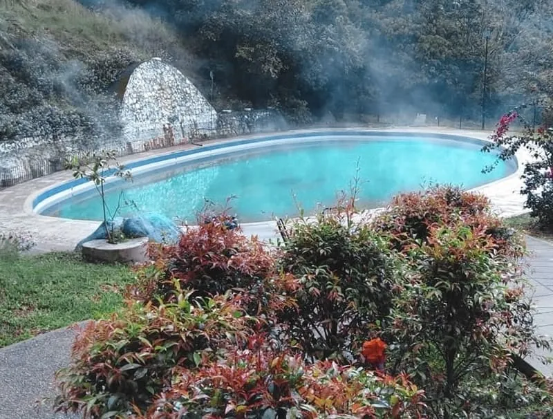
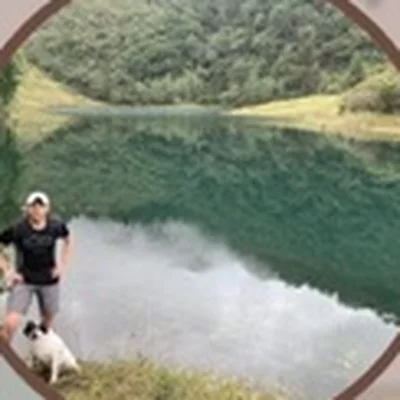

-

-

Mirador Siatala
GamaVista panorámica donde las montañas se juntan con el Embalse del Guavio.
- Vehículo 20 min
- Vista al embalse
-

Cascada Nemostén
JunínUna caída de agua monumental entre vegetación y senderos.
- Vehículo 40 min
- 40 min caminando
- Cascada natural
-
Truchera El Oasis
JunínTruchas de sus propios estanques, en un ambiente campestre.
- Vehículo 30 min
- Restaurante campestre
-

Embalse del Guavio
GachaláAguas color esmeralda entre montañas. Hay recorridos en lancha.
- Vehículo 50 min
- Vista desde el puerto
-

Termales
GachetáAguas cálidas con minerales para relajarse en medio de la naturaleza.
- Plan de día
- Piscinas naturales
-

El viaje también cuenta
Paradas que recomendamos en el camino
Son 3 horas desde Bogotá: vale la pena parar a comer, comprar algo rico o estirar las piernas.
-
El Rincón del Buen GustoRestaurante
-
Restaurante Campestre Truchera El OasisRestaurante campestre
-
Charcutería Euro SuisseCharcutería
-
Cascada NemosténNaturaleza · Junín
-
Restaurante La RochelaRestaurante · Junín
-
Panadería La Especial CampestrePanadería · Guasca
-
Parador Puerta al Guavio - Ruta 50Parador
¿Te armamos el recorrido?
Cuéntanos qué te gusta y te recomendamos el plan según el clima y tus días.
Escríbenos por WhatsApp